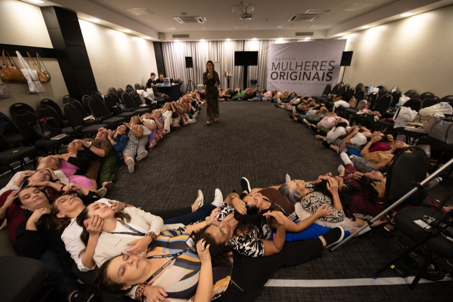
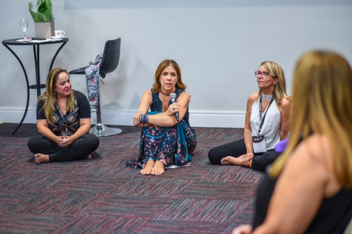
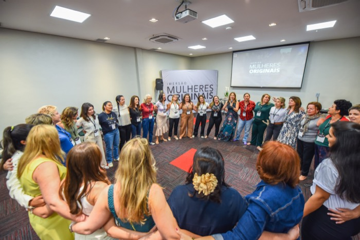
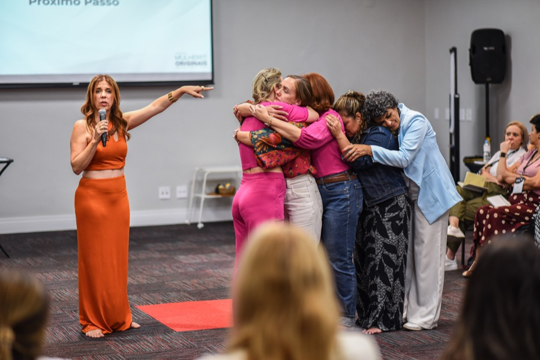

Uma jornada para mulheres que decidiram parar de apenas compreender o que não está bom — e começar a se transformar de verdade.
A vida que você tem hoje não precisa ser a vida que você terá daqui para frente.
Você não chegou tarde demais. Você não perdeu a sua chance.
E talvez a insatisfação que você está sentindo não seja o fim de alguma coisa. Talvez seja o começo de uma nova fase da sua vida.
"Eu não quero continuar me sentindo assim."
E se isso não for o fim? E se for uma passagem?
Eu acompanho mulheres há mais de 25 anos. E existe um momento da vida feminina que me interessa profundamente: é quando uma mulher percebe que a vida que ela construiu precisa mudar.
Isso pode ser assustador. Mas também pode ser extraordinário.
Não estou falando de voltar a ser a mulher que você era aos 20 anos. Nem aos 30. Nem antes de casar. Nem antes de ter filhos.
Estou falando de encontrar a mulher que você é agora.
Não acontece de uma vez.
Você não acorda um dia e decide: "A partir de hoje vou me abandonar." Acontece aos poucos.
Um pequeno não que você transforma em sim. Uma vontade que você adia. Um limite que você não coloca. Uma necessidade que sempre pode esperar — até que chega um momento em que você olha para a própria vida e pensa: "Onde foi que eu fiquei?"
Foi tentando compreender esse padrão que eu comecei a trabalhar profundamente com aquilo que chamo de Feminino Ferido.
Não é um diagnóstico. Não significa que exista alguma coisa defeituosa em você.
É uma maneira de nomear um conjunto de feridas e padrões femininos que podem fazer uma mulher se desconectar de sua voz, de seus desejos, de seus limites e de si mesma.
E é exatamente esse padrão que trabalhamos, juntas, dentro do Círculo.
Cuidar não é o problema. Desaparecer enquanto cuida, sim.
Eu não vou te ensinar a deixar de cuidar. Não vou te ensinar a ser egoísta. Não vou te ensinar a abandonar as pessoas que você ama.
Vou te propor uma coisa muito mais difícil: continuar amando os outros sem precisar abandonar a si mesma.
Você não precisa destruir a vida que construiu para começar uma nova fase.
Não precisa se separar. Não precisa largar o emprego. Não precisa romper com a família ou virar outra pessoa — a não ser que essa seja mesmo a sua escolha.
A primeira mudança não é externa. É interna.
Antes de mudar de casamento, você precisa mudar a maneira como existe dentro daquela relação. Antes de mudar de profissão, precisa reconhecer o que deseja profissionalmente. Antes de recuperar sua sexualidade, precisa voltar a habitar o próprio corpo. Antes de pedir que alguém escute você, precisa começar a se escutar.
Você não precisa resolver a sua vida inteira hoje. Precisa começar a se mover na direção da vida que quer viver.
Uma jornada para mulheres que decidiram parar de apenas compreender — e começar a se transformar de verdade.
O Círculo não é mais um curso. Não é um lugar para acumular informação. Não é uma série de aulas gravadas para você assistir sozinha e abandonar na terceira semana.
É uma experiência. Um processo. Uma travessia.
Porque existe uma coisa que aprendi profundamente trabalhando com mulheres: uma mulher se transforma de uma maneira diferente quando é vista por outras mulheres.
Quando uma mulher encontra coragem para contar a própria história, outra reconhece a dela. Quando uma consegue colocar em palavras uma dor, outra finalmente consegue nomear a sua. Quando uma encontra coragem para mudar, alguma coisa desperta nas outras.
Existe uma inteligência coletiva no grupo que nenhuma de nós produz sozinha.




| Módulo | Tema |
|---|---|
| 1 | Para que Círculo de Mulheres? |
| 2 | Amor e dor na relação com as Mulheres da Minha Família |
| 3 | Múltiplos papéis na sociedade patriarcal: De que lugar falamos? |
| 4 | A Escuta Ativa |
| 5 | Autoestima e Autoimagem: Corpo |
| 6 | Sexualidade |
| 7 | A relação com o masculino: Exclusão, dor e amor |
| 8 | O arquétipo da mulher selvagem: Instinto e Criatividade adormecidas |
| 9 | O Poder da Parceria |
8 passos práticos transformadores:
Quero te fazer algumas perguntas antes de falar de investimento.
Se tudo o que esse processo fizesse fosse ajudar você a finalmente reconhecer o que quer para a próxima fase da sua vida... isso teria valor?
Se tudo o que ele fizesse fosse ajudar você a colocar limites sem precisar abandonar quem você ama... isso teria valor?
Se tudo o que ele fizesse fosse ajudar você a recuperar a capacidade de escolher a própria vida... isso teria valor?
E se, além de tudo isso, você pudesse fazer essa travessia acompanhada de outras mulheres, inspirada por elas a viver suas próprias mudanças?
Eu quero colocar esse investimento em perspectiva.
Um processo terapêutico individual particular pode facilmente representar um grande investimento financeiro ao longo de alguns meses. Mas eu não quero comparar as duas experiências como se fossem iguais. Não são. O trabalho individual tem uma potência. O grupo tem outra.
No Círculo existe algo que só acontece quando mulheres atravessam juntas. Você não recebe apenas a minha condução. Você recebe também o espelho, a identificação, a coragem e a sabedoria que emergem do encontro com outras mulheres. Nós aprendemos umas com as outras, nos apoiamos e nos fortalecemos.
| Conteúdo | Mensal | 3 meses | 6 meses |
|---|---|---|---|
| Encontros Terapêuticos dos Círculos de Mulheres | R$ 600 | R$ 1.800,00 | R$ 3.600 |
| 9 Aulas Gravadas | R$ 997,00 | R$ 997,00 | R$ 997,00 |
| Jornada de Autocura | R$ 997,00 | R$ 997,00 | R$ 997,00 |
| TOTAL | R$ 2.594,00 | R$ 3.794,00 | R$ 5.594,00 |
As duas opções te dão acesso completo ao Círculo. A diferença está na duração da sua jornada, no número de encontros comigo e no tempo de acesso ao conteúdo.
💡 Dúvida entre as duas? Se você está buscando uma primeira experiência de travessia guiada, comece pelo Trimestral. Se você já sabe que quer se comprometer com uma jornada mais longa de transformação, com mais encontros comigo e mais tempo de acesso, o Semestral entrega o dobro de acompanhamento pelo mesmo espírito de investimento.
Você pode terminar esta página, levar tudo o que leu e tentar fazer esse movimento sozinha. E eu espero sinceramente que você faça alguma coisa com aquilo que percebeu aqui.
Ou pode dizer: "Eu não quero fazer essa travessia sozinha." E entrar para o Círculo.
Eu quero terminar voltando para uma pergunta simples:
Você se sente realizada com a sua vida?
Talvez hoje sua resposta tenha sido: "Não muito." Talvez: "Eu nem sei."
Talvez você tenha percebido que existe uma parte de você que está adormecida.
Mas eu quero te lembrar de uma coisa:
Você ainda está aqui. Ainda existe tempo. Ainda existe desejo. Ainda existem escolhas. Ainda existem encontros. Ainda existem amores. Ainda existem projetos. Ainda existe prazer. Ainda existem lugares onde você nunca esteve. Ainda existem versões suas que você ainda não conheceu.
Você não precisa voltar a ser a mulher que era. Talvez aquela mulher já tenha cumprido lindamente o papel dela.
Talvez agora seja hora de conhecer a mulher que você está se tornando.
A pergunta é: você está disposta a participar dessa mudança?
Se a sua resposta for sim... eu vou ficar muito feliz de receber você no Círculo de Mulheres.